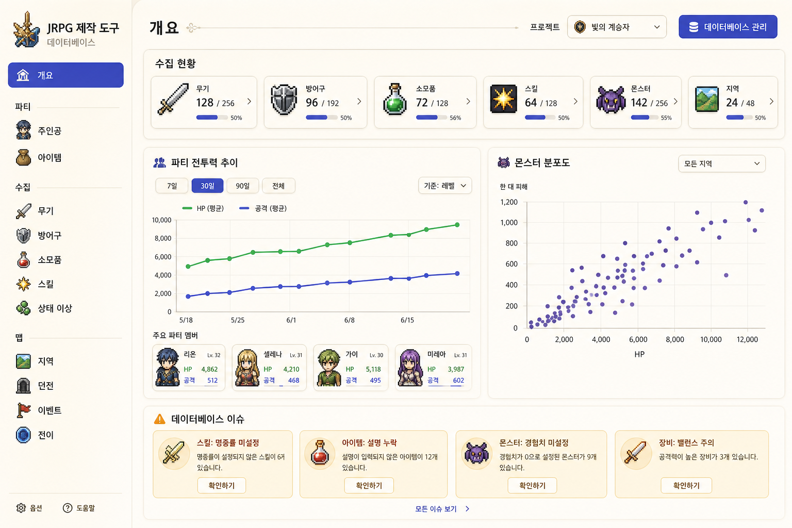
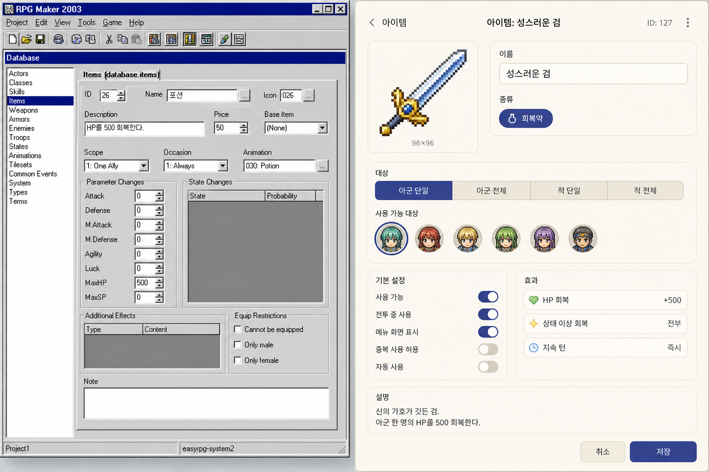
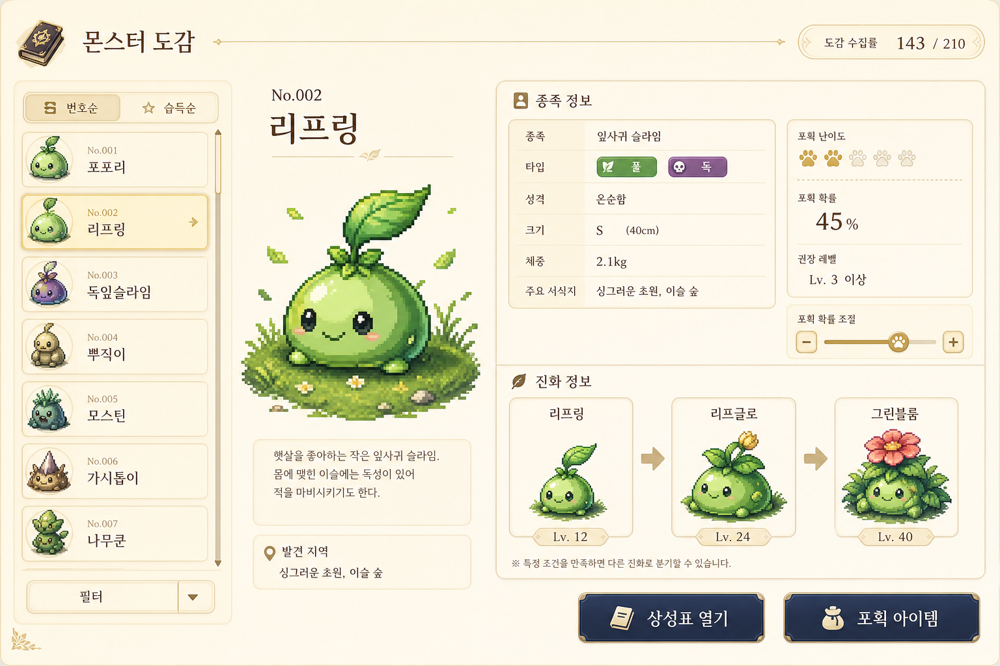
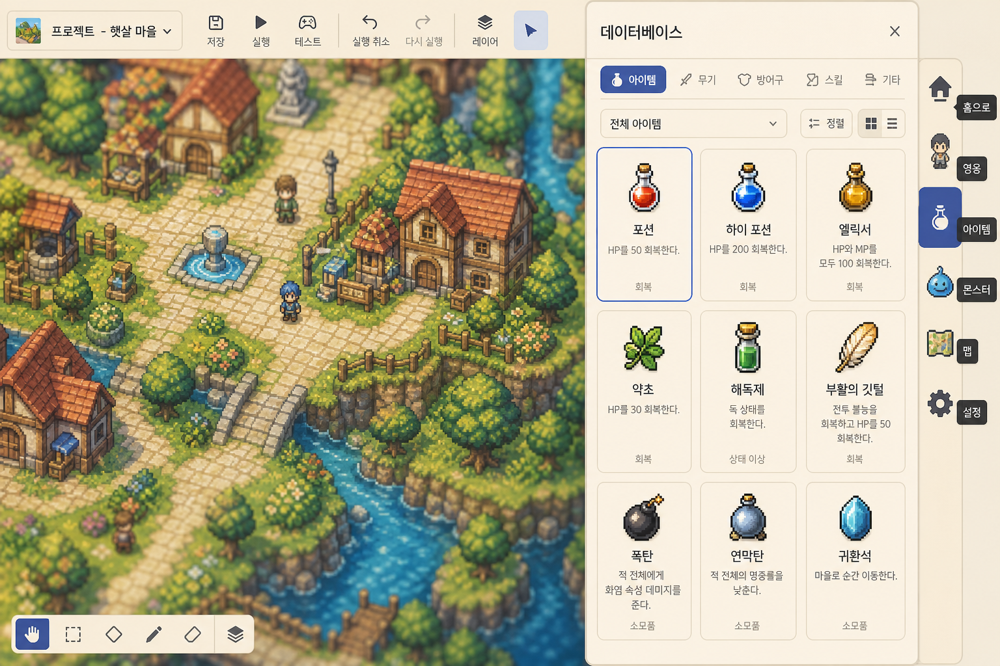
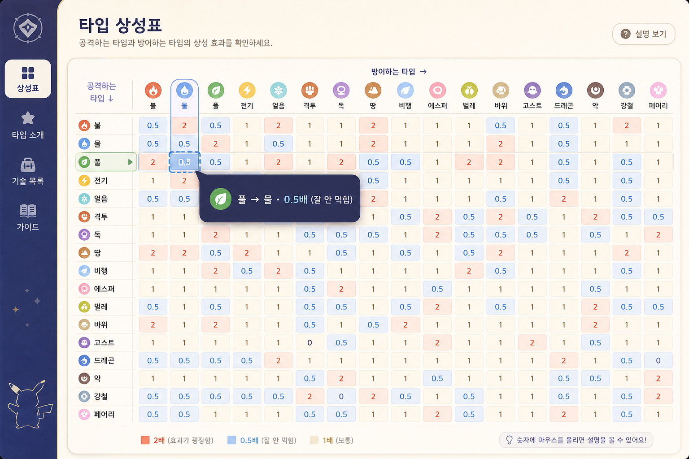

보이는 것은 고를 수 있다
리소스 id, 스킬 id, easyrpg-system2 문자열은 필드가 아닙니다. 큰 미리보기와 썸네일 격자만 남깁니다.

전투 규칙은 엔진이 기억하면 됩니다. 사람은 초상, 아이콘, 미리보기, 한 줄 말로 고칩니다.
RM2003 창을 재현하는 일은 제품 목표가 아닙니다. 스키마·저장·전투 계산은 그대로 두고, 만지는 면만 사람 쪽으로 갈아끼웁니다.
리소스 id, 스킬 id, easyrpg-system2 문자열은 필드가 아닙니다. 큰 미리보기와 썸네일 격자만 남깁니다.
검은 장비 탭에서만. 전투 HP는 몬스터에서만. 수집 정체성은 종족에서만. 아이템 탭의 가짜 무기 폼은 접습니다.
개요 칩, 산점도 점, 문제 카드는 장식이 아니라 문입니다. 클릭하면 해당 레코드가 열립니다.
아래는 방향 스케치입니다. 픽셀 복제가 아니라, RM 회색 시트 대신 초상·아이콘·범례가 주인인 상태를 보여 줍니다.

숫자는 문입니다. 주인공 6을 누르면 주인공 탭이 열립니다.



지금 사이드바의 「수집」에는 전투 배틀러가 있고, 「세계」에는 맵이 아니라 전투 지형이 있습니다. 그룹 이름을 작품 만드는 사람의 일로 바꿉니다.
엔진 키는 남을 수 있습니다. 초보·표준 화면에 아래 문구가 보이면 실패한 겁니다.
반대로 잠글 계약 — 룩이 아니라 동작.
한 번에 24탭을 다시 그리지 않습니다. 사람이 매일 만지는 문부터 그림으로 바꿉니다.
개요를 진짜 입구로: 칩 클릭, 범례, 시작 파티 곡선, 이슈는 맞는 탭으로. 도크에 아이콘·이름. 1024에서 잘리는 그리드는 1열.
아이템에서 장비 폼 제거. 직업 습득 스킬을 주인공과 같은 행 편집으로. 스킬·속성을 인스펙터 헤더 + 한글 등급으로.
몬스터/적 무리를 전투로. 종족은 초상 카드. 애니메이션 프레임이 실제로 그려지게. 전투 명령 탭은 직업으로 흡수.
상성표 카피 정정, 타입 비우기 확인, 하루 끝 삭제 가드, 지형·타일셋 raw id를 피커로. RM 경로 행 전면 삭제.